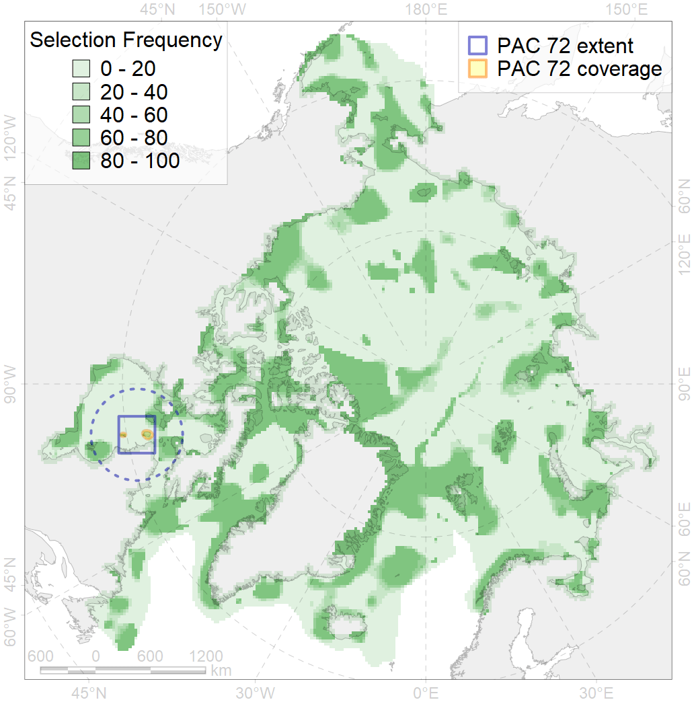
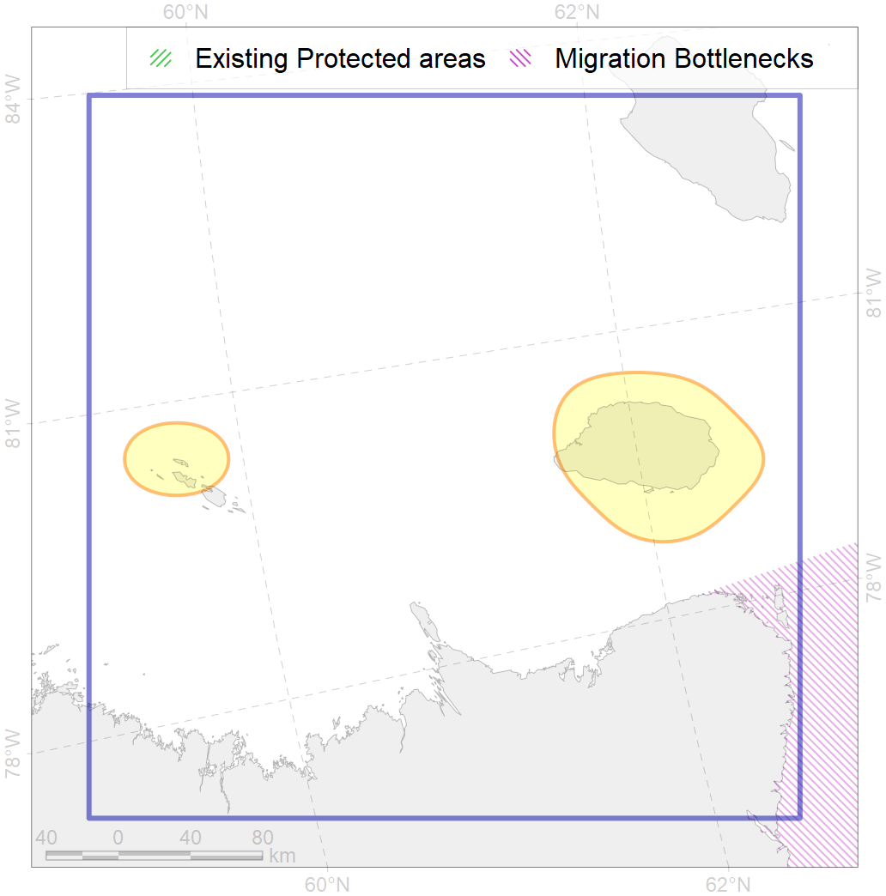

72
For more information regarding this PAC and to conduct custom spatial analysis using the PAC data or any spatial query, please consult Accenter.

0
CFs entirely within the PAC area
0
CFs with a quarter of their amount within the PAC area
0
CFs with their targets achieved in the PAC
0
CFs with at least half of their target achieved in the PAC
| CF | Name | Share of the Total Amount within the PAC | Conservation Target | Share of the Target Achievement for the ArcNet | PAC’s Contribution to the Target Achievement |
|---|---|---|---|---|---|
| 3129 | Polynyas distribution in the Eastern Hudson Bay region | 4.1% | 12.0% | 14.8% | 6.6% |